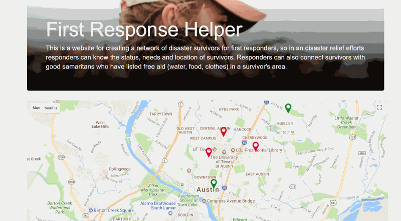

Recent Projects
Mark Me Safe
- Built on React, Bootstrap, Python, Flask, SQLite, Mocha and Jest.
- Uses Google Maps Api to add markers to map from database and user form.
- Made as part of the Maker Faire Austin Disaster Relief Hackathon.
- Visit the GitHub
Cryptex—A Crypto Portfolio Guide
- Site pulls the current top 20 cryptocurrencies and suggests an investment amount for each, based on our formula and the user’s investment amount.
- Built with Gulp, Bootstrap v4, Sass, PUG, ES6, Chart.js, multiple APIs and Google Analytics.
- Overlooked international remote team as project manager. This was a two-month project, as part of the Chingu Developers Network.
- Visit the GitHub
Word Fight
- A competitive browser game played online between two players.
- Built on latest version of React, interacting with Google's real-time database Firebase.
- This is a work in progress.
- Visit the GitHub
FreeCodeCamp Apps
- Learned CSS, HTML, and JavaScript fundamentals through a portfolio page, tribute page, random quote generator and weather app.
- Applied API calls for quote database and weather.
- Used jQuery and made full use of HTML 5's features, such as geolocation and video playback.
- Visit the GitHub
Unity Browser Games
- Built various prototypes, clones and small indie games.
- Used Unity 3D and C# for programming. Used Photoshop, Blender, Aseprite and and Qubicle for making visuals.
- Visit the GitHub